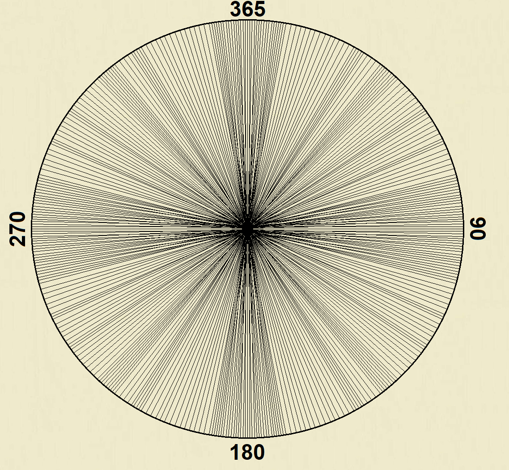
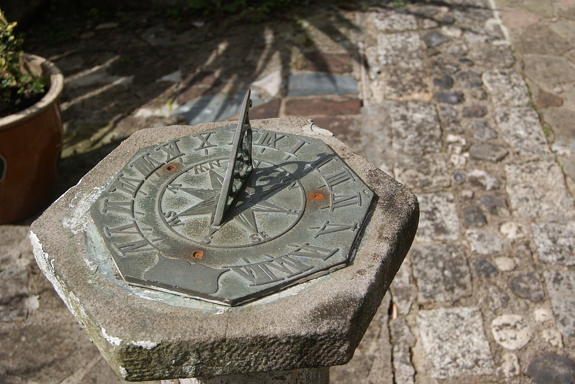
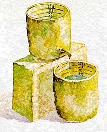
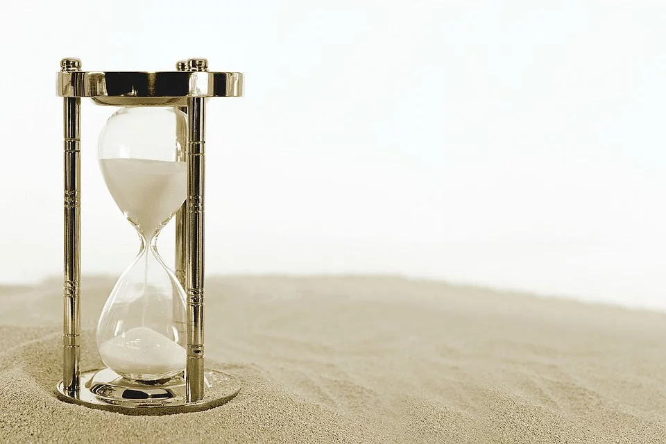

Você já pode ter ouvido que a Física está presente em tudo a nossa volta, e ao longo de nosso estudo conseguiremos perceber que realmente ela está em tudo. Por exemplo
Descrevendo o que está ao meu redor enquanto escrevo isso, vejo a luz do sol realizando reflexões difusas no chão, o vento fazendo balançar um fio de luz pendurado como se fosse um pêndulo, podemos ainda imaginar as particulas de poreira/ar colidindo com o fio, transferindo momento. Vejo o céu azul, e muitos já se perguntaram, por que o céu é azul? Vejo diversas cores, seja verde das plantas, vermelho de um carro que está na rua, azul da minha caneta, o que faz cada um ter uma cor? Vejo um avião voando, como um objeto tão pesado pode voar? Vejo a lua em um C crescente, por que ela não se afasta de nós ou se aproxima? Vejo o cercado que meu vô fez, um pouco torto, mas numa posição estável. Escuto diversos sons diferentes. Observo cada coisa, e tudo é constituido da mesma essência, de átomos, mais afundo, elétrons, prótons e neutrons.
Cada fenômeno pode ser descrito de uma maneira e muitas vezes precisamos ir além de apenas palavras. Acredito que não tenha uma maneira mais elegante de dizer isso se não utilizar a frase de Galileu:
"A ciência está escrita neste grande livro colocado sempre diante de nossos olhos - o Universo - mas não podemos lê-lo sem aprender a linguagem e entender os símbolos em termos dos quais está escrito. Este livro está escrito na linguagem matemática."
Por isso é muito importante ter conhecimento sobre matemática. Caso queira revisar os conceitos visite a aba "matemática".
É com a ajuda da matemática que vamos conseguir descrever os fenômenos da natureza e até a prever com certo grau de exatidão o que pode ocorrer no futuro.
Um ponto de grande importância é a ideia de unidade de medida, pois estáremos sempre trabalhando com alguma grandeza física, e as grandezas físicas sempre estão vinculadas a unidades de medidas. Por exemplo, o metro é a unidade de medida da grandeza física comprimento. De modo objetivo, essas unidade servem para medir diferentes grandezas.
Existem três unidades de medidas fundamentais, são elas:
Para medir o comprimento de algo geralmente utilizamos um objeto ou algo para comparar. Na antiga Mesopotâmia, uma das primeiras medidas padrão para o comprimento foi o côvado. O covâdo real era baseado no comprimento do braço do faraó, do cotovelo até a ponta do dedo médio. Ele foi padronizado usando hastes feitas de granito, posteriormente foram subdivididos em comprimentos mais curtos, parecidos com centímetros e milímetros.
Outros exemplos temos a dos romanos, que utilizavam o comprimento do pé ou da caminhada. Outro exemplo foi na Inglaterra, que para fins de comércio surgiu a polegada, tendo como base o comprimento de três grãos de cevada de ponta a ponta.
Em 1790 na Academia Francesa de Ciências se estabeleceu um conselho de cientistas e matemáticos para estabelecer um sistema metrico que perdurasse para sempre e que fosse comum para todos. A medida da distância, o metro, seria 1/10.000.000 da distância entre o Pólo Norte e o equador.
Após quase um século de estudo para aumentar a precisão, definiram como sendo a distância entre dois traços numa barra de platina. Assim seria possivel criar réplicas deste protótipo. Após a primeira reunião da organização internacional de pesos e medidas (BIPM-1875), foi desenvolvido 30 protótipos para os membros da organização. Esses protótipos foram feitos de platina e irídio, pois duram mais do que apenas a platina, outro ponto de mudança foi a forma de X da barra, pois uma barra plana sofre mais distorções. A barra teria mais de um metro de comprimento, ou seja, o metro seria definido como sendo a distância entre duas linhas escritas na superfície do material, assim as extremidades caso sofressem avarias, não iriam interferir nas linhas escritas.
Em 1927 ocorreu um novo salto da precisão da medida do metro, graças aos fenomenos da interferometria. Na área de ondulatória iremos estudas esse fenômeno. Após anos de de estudos e do aperfeiçoamento da precisão (ver: NIST.gov), em 1983 foi redefinido o medidor padrão do metro, assim sendo, o metro ficou definido como sendo: o comprimento do caminho percorrido pela luz no vácuo em 1/299.792.458 segundo A medida comprimento passou a ser derivada de um outro padrão de medida, o Tempo. Mas como o Tempo foi definido? Tempo O Tempo é a medida que está presente constantemente em nossas vidas, talvez sejá aprimeira coisa que olhamos quando acordamos para saber que horas são. Mas o que realmente é o Tempo? O Tempo mede intervalos de eventos, ou seja, a duração em que dois eventos ocorre. O relógio é o acúmulo desses eventos, por exemplo, se tivessemos um relógio que tivesse como o evento dia, teriamos um relógio com 365 divisões (como ao lado).  Birznek(2020) As primeiras divisões de eventos ocorreram com o dia e a noite, os Egípcios fizeram uma divisão a mais, separaram cada um em 12 partes. Aperfeiçoando cada vez mais essa ideia e com a periodicidade dos eventos, eles perceberam que no verão o dia era mais longo, assim nessa época aumentavam as divisões do dia e diminuiam o da noite. Os minutos e segundos surgiram a partir da astronomia. Tudo começou com os povos súmericos, que dividiram um círculo em 360 graus, posteriormente com os povos babilônicos e os gregos utilizaram essa ideia para dividir o céu e para melhorar a precisão dos estudos dividiram cada grau em 60 minutos e posteriormente cada minuto em 60 segundos. Tal ideia foi introduzida nos relógios mecânicos. Os relógios evoluiram conforme os padrões foram sendo definidos. Um dos relógios mais antigos é o relógio de sol. Tem como fundamento o comprimento da projeção da sombra de uma estaca em uma escala graduada.  Outro exemplo de relógio que foi utilizado na antiga Babilônia e Egito foram os relógios de água. Tem como base o escoamento da aguá por um pequeno orifício, ao escoar, o outro recipiente que tem uma escala graduada começa a encher. Marcando assim um certo tempo. Outro exemplo de relógio é o de areia, quando a area dentro de uma ampulheta passa de um lado para o outro é definido um intervalo de evento. Hoje prevalece os relogios mecânicos e digitais, que tem como base de funcionamento as divisões do dia relatadas anteriormente (1 dia 24 partes/horas, cada hora 60 minutos e cada minuto 60 segundos).   para melhorar a precisão da medida.... Massa
A medida comprimento passou a ser derivada de um outro padrão de medida, o Tempo.
Mas como o Tempo foi definido?
O Tempo é a medida que está presente constantemente em nossas vidas, talvez sejá aprimeira coisa que olhamos quando acordamos para saber que horas são. Mas o que realmente é o Tempo?
O Tempo mede intervalos de eventos, ou seja, a duração em que dois eventos ocorre. O relógio é o acúmulo desses eventos, por exemplo, se tivessemos um relógio que tivesse como o evento dia, teriamos um relógio com 365 divisões (como ao lado).
As primeiras divisões de eventos ocorreram com o dia e a noite, os Egípcios fizeram uma divisão a mais, separaram cada um em 12 partes. Aperfeiçoando cada vez mais essa ideia e com a periodicidade dos eventos, eles perceberam que no verão o dia era mais longo, assim nessa época aumentavam as divisões do dia e diminuiam o da noite.
Os minutos e segundos surgiram a partir da astronomia. Tudo começou com os povos súmericos, que dividiram um círculo em 360 graus, posteriormente com os povos babilônicos e os gregos utilizaram essa ideia para dividir o céu e para melhorar a precisão dos estudos dividiram cada grau em 60 minutos e posteriormente cada minuto em 60 segundos. Tal ideia foi introduzida nos relógios mecânicos.
Os relógios evoluiram conforme os padrões foram sendo definidos. Um dos relógios mais antigos é o relógio de sol. Tem como fundamento o comprimento da projeção da sombra de uma estaca em uma escala graduada.
Outro exemplo de relógio que foi utilizado na antiga Babilônia e Egito foram os relógios de água. Tem como base o escoamento da aguá por um pequeno orifício, ao escoar, o outro recipiente que tem uma escala graduada começa a encher. Marcando assim um certo tempo. Outro exemplo de relógio é o de areia, quando a area dentro de uma ampulheta passa de um lado para o outro é definido um intervalo de evento. Hoje prevalece os relogios mecânicos e digitais, que tem como base de funcionamento as divisões do dia relatadas anteriormente (1 dia 24 partes/horas, cada hora 60 minutos e cada minuto 60 segundos).
para melhorar a precisão da medida....